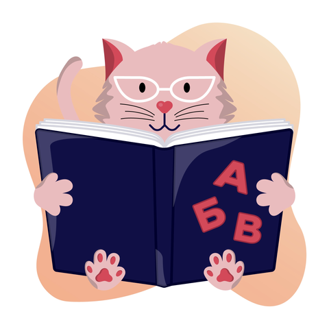

Профессорка Мерлин - Учёная Кошка

В этой школе она обучается
А это её мама
Мерелин была удивительной кошкой. Ее непревзойденный интеллект и любознательность делали ее поистине уникальной. В отличие от обычной кошки, Мерелин обладала удивительной способностью анализировать окружающий мир и находить необычные решения для различных ситуаций.
Ее преимущества были впечатляющими:
- Во-первых, Мерелин обладала удивительной памятью. Она легко запоминала различные команды и инструкции, что делало ее отличным компаньоном для игр и учебы. Даже когда дело доходило до трюков, Мерелин была на высоте, благодаря своей способности быстро учиться и запоминать.
- Во-вторых, Мерелин была очень сообразительной. Она быстро понимала причинно-следственные связи и могла использовать свои наблюдения для решения задач. Ее острый ум и умение анализировать ситуацию помогали ей находить необычные решения и преодолевать преграды.
- В-третьих, Мерелин была чрезвычайно общительной и любознательной. Она любила общаться с людьми и другими животными, и была открыта к новым знаниям и опыту. Ее любознательность и общительность делали ее прекрасным компаньоном для всех, кто встречался с ней.
Узнать больше